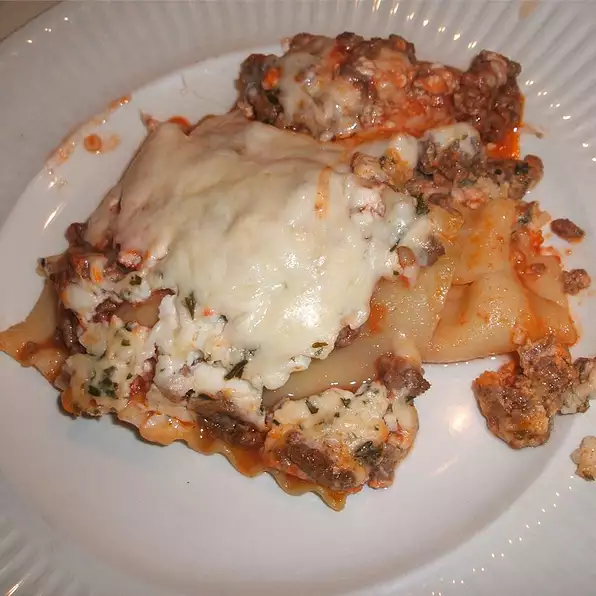

Lasagna

Description
Quick, easy lasagna that tastes great!
Ingredients
- 10 ounces lasagna noodles
- 1 1/2 pounds lean ground beef
- 3 cups cottage cheese
- 2 eggs
- 1 teaspoon garlic powder
- 2 tablespoon dried parsley
- salt and pepper to taste
- 1 can of tomato paste
- 2 cans of tomato sauce
Directions
- Preheat oven to 375 degrees F (190 degrees C).
- Bring a large pot of lightly salted water to a boil. Add lasagna noodles and cook for 8 to 10 minutes or until al dente;
drain.
- In a skillet, brown ground beef. Using a fork, mix cottage cheese, eggs, garlic powder, parsley, salt and pepper. In a
separate bowl combine tomato paste and tomato sauce.
- In a 9x13 inch baking pan, layer noodles, ground beef, tomato sauce mixture and cottage cheese mixture. Two layers of
each will fit. Cover with tin foil and bake for 30 minutes. Remove tin foil the last 8 minutes of baking time.
Home
To top